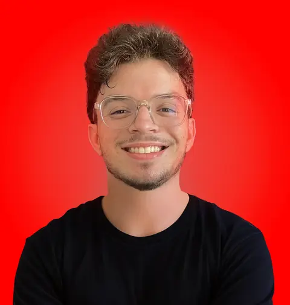

YESSINE AKROUT / VIDEO EDITOR & MOTION DESIGNER
Good footage.
Great stories.
I turn raw footage into films that hold your attention. Documentary, social content, and motion — shaped with purpose, cut with feeling.

From the first cut
to the final frame.
01 / SELECTED WORK
Made to be watched.
Different formats. One focus:
a story worth staying for.
I'm Yessine, a video editor and motion designer based in Sfax, Tunisia. Since 2016, I've worked on everything from a feature-length documentary about Tunisia to short-form content built for the scroll.
I bring structure, rhythm, and a clear visual direction to every edit. I also study Computer Science — which might explain the organized timelines — and I'm comfortable in front of the camera when a project calls for it.
My toolkit
Premiere Pro · After Effects
Photoshop · Illustrator
Let's speak
Arabic — Native
English — C1 · French — B2
03 / HOW I CAN HELP
Your footage. My craft.
From an idea on the page
to a finished piece on screen.
Documentary & long-form
Find the narrative, shape the pace, and make every scene earn its place.
02Social media & shorts
Sharp hooks, thoughtful pacing, and vertical edits built for the feed.
03Promo & motion graphics
Bring brands and ideas to life through movement, sound, and a strong visual identity.
04Tutorials & explainers
Clear, engaging walkthroughs that turn complex ideas into easy-to-follow stories.
05Talking-head content
Polished presenter edits, with on-camera delivery available when you need it.
04 / NEXT UP: YOUR PROJECT
Let's make something
worth watching.
Open to freelance projects and remote editing roles.
yessine.akrout123@gmail.com